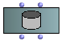
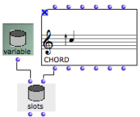

The Store Object
The store object is a general-purpose object , which is designed to store any type of data. For instance, one may want to be able to design one or more programs and use the same object everywhere without defining its type from the beginning.
The icon of a store object  represents a memory space.
represents a memory space.
A store object can be manipulated in a patch just like any other type of object, via factory, instance or slot boxes .
When a global variable[1] is created in the Globals package , it is a store object, by default. Consequently, any type of object can be stored into it.
The Store Factory Box
The store factory box allows to create any type of variable from any type of object in a patch. It has two inputs and outputs :
|  |
To add a store factory box :
select
Classes / OMKernel / Data / Storetype "store" directly in the patch editor.

The Store Default Global Variable
By default, a global variable created in the Globals package is an instance of the class Store .

To create a global variable from the Store class :
open the Globals package window
double click on the upper part of the suitcase icon or
Ctrl/ right click and chooseOpen.
Select
File / New Variable.
Setting the Value of a Store Object
|  |
1. |  | Add a store instance or global variable |
2. |
| Add a
store slots
box
: |
|  The value of the variable is now a chord. |
A global variable can be edited, from the Globals window, or from a patch editor. Double click on the icon of a store object
 to open its editor.
to open its editor.
Note that the editor of this value is the same as that of the corresponding class. |  |
If the store object is a global variable, the corresponding variable in the Globals package and all of its representations will be affected by possible modifications.
Global variables can only be renamed from the Globals package of the Library window, and only from this location.
- Global variable
An instance of OM object that has been saved in order to be used in other programs. Global variables are visible from the
Librarywindow and stored as .omi files in theGlobalsfolder of the workspace.